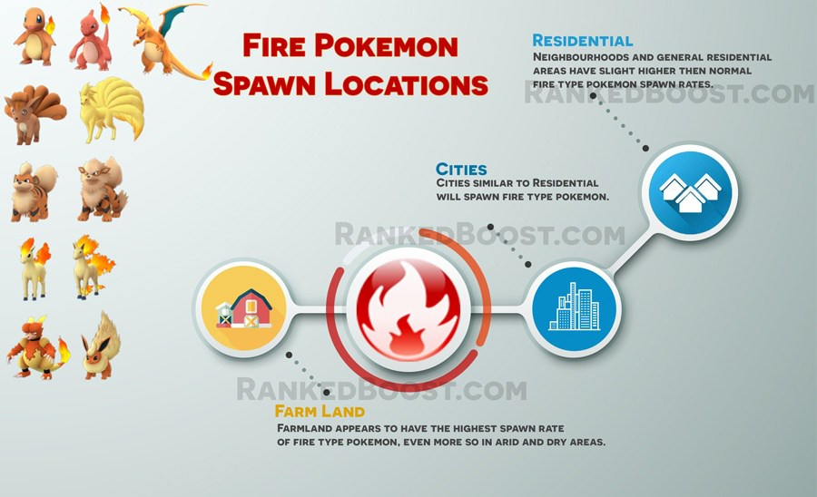

Where Do I Catch Fire Pokemon In Pokemon Go: Fire Type Pokemon are common in residential areas like neighborhoods. Players are reporting higher spawn rate of fire type Pokemon in dry/arid and warmer type climates. Note: You will still find fire type Pokemon in any climate, they will just be less common.
How To Get Fire Type Pokemon Tips:
Where Do I Find Fire Pokemon? – ( Fire Pokemon Locations )
Confirmed Fire Pokemon Go Spawn Locations: Residential – Cities – Neighborhoods – Dry/Arid Climate – Warmer Climate – Beach – Parks
Unconfirmed Fire Pokemon Go Spawn Locations: Parking lots – Gas Stations.
There is a Total of 12 Pokemon Go Fire Pokemon: Charmander, Charmeleon, Charizard, Vulpix, Ninetales, Growlithe, Arcanine, Ponyta, Rapidash, Magmar and Flareon. Moltres is a legendary Pokemon who currently you cannot catch in the wild.
